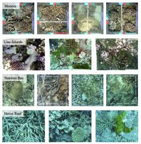

Pacific Labeled Corals is an aggregate dataset containing 5090 coral reef survey images from four Pacific monitoring projects in Moorea (French Polynesia), the northern Line Islands, Nanwan Bay (Taiwan) and Heron Reef (Australia). Pacific Labeled Corals contain a total of 251,988 expert annotations across 4 pacific reef locations, and can be used as a benchmark dataset for evaluating object recognition methods and texture descriptors as well as for domain transfer learning research. The images have all been annotated using a random point annotation tool by a coral reef expert. In addition, 200 images from each location have been cross-annotatoed by 6 experts, for a total of 7 sets of annotations for each image.
A table with summary statistics about the 4 locations are provided here and sample images here. All images are annotated using a 20 class label set. This include 8 coral genera and one 'other hard coral' label.
The data from each location is split into two sets, Evaluation and Reference.
The Evaluation sets each have 200 images with 10 random points per image. These are annotated with 7 sets of annotations. "Archived": the annotation assigned during the original ecological survey; "Host": the re-annotation by the same coral expert; "Visitor1-5": annotations by 5 coral expert not familiar with the local ecology. See this file for a sample Evaluation Set annotation file. The integer 'imageid' value is mapped to an image file through an imagemap file, and the integer values for the various annotators are mapped to labels through the label set file.
The Reference sets contain the remaining images (between 471 and 2,597 image files with 24-200 annotations per images depending on the dataset). These only contain the Archived annotations. See this file for a sample Reference Set annotation file.
Compressed archived from Line Islands, Nanwan Bay and Heron Reef are availble for download from the Dryad data repository, doi:10.5061/dryad.m5pr3. The data from Moorea can be downloaded from the Moorea Coral Reef Long Term Ecological Research (MCR-LTER) website.
We kindly ask that you cite this paper in any results utilizing this data.